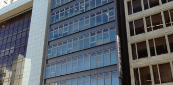

【個室レンタルオフィス】
オープンオフィス京阪淀屋橋
京阪淀屋橋での起業や事業拡大だけではなく、大阪本社・支社設立にも最適な環境です。
場所は京阪淀屋橋駅直結、徒歩2分。本町エリアへも好アクセスという絶好のロケーションです。
簡単に、リーズナブルな価格で、好きなときに使えるレンタルオフィス。 お気軽にお問い合わせください。
オープンオフィス京阪淀屋橋が提供するオフィスサービス
-
 高速インターネット＜光ファイバー＞
高速インターネット＜光ファイバー＞
- 100Mbpsの光ファイバーによるブロードバンド環境をご用意しました。各部屋に配線済みですので、パソコンに繋げばすぐLAN経由で高速インターネットを利用出来ます。
-
 ネットワーク・カラーレーザープリンタ+スキャナー
ネットワーク・カラーレーザープリンタ+スキャナー
- ネットワークを利用して、各お部屋のパソコンから印刷できます。プリンタをご用意いただく必要もございません。
スキャナー機能も搭載しております。
-
 カラーレーザーコピー
カラーレーザーコピー
- フロア内にご用意してあります。カード方式でコピーが出来ますので、小銭の準備が不要です。
-
 ICカードキーによる入室管理
ICカードキーによる入室管理
- 専用ICカードを使ったホテル式のスマートシステムを用いて、セキュリティーを向上させています。
-
 ミーティングルーム（会議室）
ミーティングルーム（会議室）
- 商談・会議にご利用いただける共有スペースをご用意しています。インターネットで簡単に予約をしていただけます。
-
 無線LAN（WiFi）
無線LAN（WiFi）
- 共有スペースとミーティングスペースにて、無線LAN(WiFi)サービスをご利用いただけます。

オープンオフィス京阪淀屋橋の特徴

- 1.抜群のアクセス
-
地下鉄御堂筋線・京阪線 淀屋橋駅より徒歩2分
京阪本線が通るエリアでも利便性が高いエリアとなってます。取引先とのアクセスが良いことはビジネスにおいてこの上とないメリットとなります。 - 2.充実した設備
- ビジネスセンターが提供する IT機器（プリンタ・スキャナなど）/OA（シュレッダー、裁断機など）を標準でご提供、利用者のビジネスをスムーズにサポートします。
- 3.多数の金融機関が隣接
- オフィス周辺には、みずほ銀行、りそな銀行、広島銀行、北浜郵便局があります。
オフィス周辺のMap
オープンオフィス京阪淀屋橋近隣のスポット
淀屋橋ODONA
オープンオフィス京阪淀屋橋の住所・アクセス
- 住所:
- 大阪府大阪市中央区北浜3-2-25 京阪淀屋橋ビル8F
- 電車からのアクセス:
- 地下鉄御堂筋線・京阪線 淀屋橋駅より徒歩2分
地下鉄堺筋線・京阪線 北浜駅より徒歩5分
オープンオフィス京阪淀屋橋のフロアマップ
8F

※フロア内は禁煙です。
※こちらはイメージ図となりますので、状況が異なる場合は現況を優先させていただきます。
- ◆初回納入金
- 利用料1ヶ月分の保証金
- ◆共益費
- 水道光熱費、ビル共益費、ゴミ出し、フロア・トイレの清掃、共有部分の消耗品代を含みます。